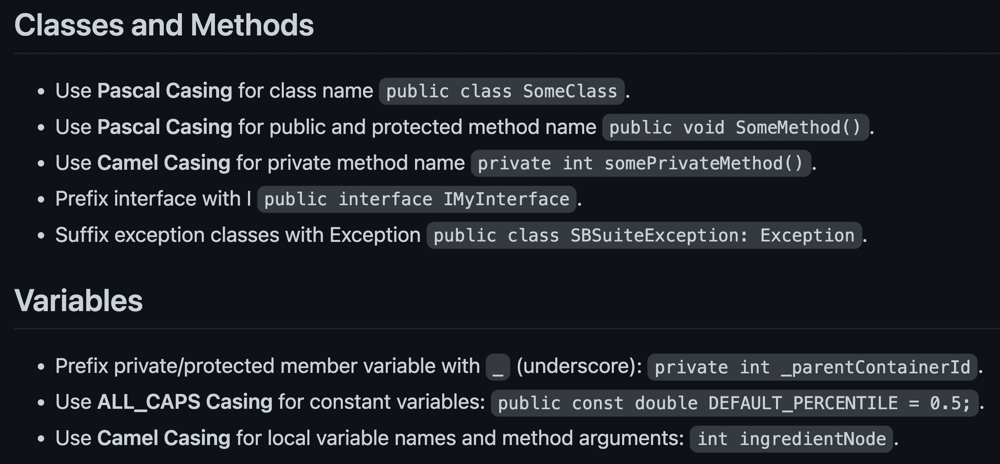

Indrajeet Patil
Link to slides
- Phil Karlton
The following advice on naming applies to all kinds of programming entities (variables, functions, packages, classes, etc.) and is language-agnostic.
Principle: Names are a form of abstraction
“[T]he best names are those that focus attention on what is most important about the underlying entity, while omitting details that are less important.”
- John Ousterhout
Importance: Names are at the core of software design
If you can’t find a name that provides the right abstraction for the underlying entity, it is possible that the underlying entity doesn’t have a clear design.
Properties: Good names are precise and consistent
If a name is good, it is difficult to miss out on critical information about the entity or to misinterpret the underlying representation.
- Confucius
How good a name is can be assessed by how detailed the accompanying comments need to be.
E.g., this has neither good function nor parameter name, and so comments need to do all the heavy lifting:
Contrast it with this:
We don’t even need a comment here!
Tip
Good names rarely require readers to read the documentation to understand what they represent.
Using generic names can improve code readability, but only if language or domain customs are followed.
E.g., in a nested loop, using j for outer and i for inner loop index is confusing!
Similarly
tmp shouldn’t be used to store objects that are not temporaryretVal shouldn’t be used for objects not returned from functionTip
Don’t violate reader assumptions about what generic names represent.
If a loop is longer than a few lines, use more meaningful loop variable names than i, j, k because you will quickly lose track of what refers to what.
All variables are temporary in some sense. Calling one tmp is inviting carelessness.
Tip
Even when you think you need generic names, you are better off using descriptive names.
Consistent names reduce cognitive burden for the reader because if they encounter a name in one context, they can safely reuse that knowledge in another context.
For example, these names are inconsistent since the reader can’t safely assume the name size means the same thing throughout the program.
Tip
Allow users to make safe assumptions about what the names represent across different scopes/contexts.
Tip
If some information is critical to know, it should be part of the name.
How precise (and thus long) the name should be is a subjective decision, but keep in mind that long names can obscure visual structure of a program.
You can typically find a middle ground between too short and too long names.
Tip
Don’t go too far with making names precise.
Try your best to misinterpret candidate names and see if you succeed.
E.g., here is a GUI text editor class method to get position of a character:
How I interpret: “x and y refer to pixel positions for a character.”
In reality: “x and y refer to line of text and character position in that line.”
You can avoid such misinterpretation with better names:
Tip
Precise and unambiguous names leave little room for misconstrual.
While naming things, always ask yourself how easy it would be to replace the chosen name with a different name.
E.g., this plotting function uses identifier p to represent a scatter plot object.
In the future, it won’t be easy either to search for and/or to rename it in the code base because searching for p would flag all ps (e.g. ggplot), and not just the one corresponding to the plot object.
Instead, if scatter_plot identifier is used, both search and replace operations will be straightforward.
Tip
Choose names that can be searched and, if the need arises, replaced.
The names should respect the conventions adopted in a given project, organization, programming language, domain of knowledge, etc.
For example, C++ convention is to use PascalCase for class names and lowerCamel case for variables.
Tip
Don’t break conventions unless other guidelines require overriding them for consistency.
Names for Boolean variables or functions should make clear what true and false means. This can be done using prefixes (is, has, can, etc.).
Use positive terms for Booleans since they are easier to process.
Tip
Give Boolean variable names that convey what true or false implies.
Having different name formats for different entities acts like syntax highlighting.
Here is an example of formatting conventions (adopted in OSP organization):
To resist software entropy, not only should you name entities properly, but you should also update them. Otherwise, names will become something worse than meaningless or confusing: misleading.
For example, let’s say your class has $getMeans() method.
Therefore, it is misleading to continue to call it a getter method, and it should be renamed to (e.g.) $computeMeans().
Tip
Keep an eye out for API changes that make names misleading.
This is probably the weakest of the requirements, but one can’t deny the ease of communication when names are pronounceable.
If you are writing a function to generate a time-stamp, discussing the following function verbally would be challenging.
This is a much better (and pronounceable) alternative:
Additionally, avoid naming separate entities with homonyms.
Discussing entities named waste and waist is inevitably going to lead to confusion.
Once you settle down on a mapping from an abstraction to a name, use it consistently throughout the code base.
E.g., two similar methods here have different names across R6 classes:
Both of these methods should either be named $retrieve_expenditure() or $fetch_expenditure().
Tip
Consistency of naming conventions should be respected at the code base level, not just for short scopes.
You won’t have to remember any of the following rules if you adopt a single principle:
“Names should be readable for the reader, and not writer, of code.”
female_birdsong_recording is a better variable name than thats_what_she_said.exit() is better than hit_the_road().cumulative_sum() is a better function name than cumsum().begin/last is worse than either begin/end or first/last.numColumns (number of columns) in one function and noRows (number of rows) in another, choose one abbreviation as a prefix and use it consistently.l and I, O and 0, etc.). With certain fonts, it can be hard to distinguish firstl from firstI.hilite instead of highlight. Benefit is not worth the cost here.accumulate, accummulate, acumulate, or acummulate?!na.rm parameter removes (rm) missing values (NA). Using it to mean “remove (rm) non-authorized (NA) entries” for a function parameter will be misleading.centre or center. Adopt one standard and stick to it.patientRecs and patientReps are easily confused because they are so similar. There should be at least two-letter difference: patientRecords and patientReports.Looking at names in the wild that violate presented guidelines.
This is not to be taken as criticisms but as real-life learning opportunities to drive home the importance of these guidelines.
R is a programming language for statistical computing, and function names can be expected to respect the domain conventions.
Statistical distributions can be characterized by centrality measures, like mean, median, mode, etc., and R has functions with names that wouldn’t surprise you, except one:
The mode() function actually returns the storage mode of an R object!
This function could have been named (e.g.) storageMode(), which is more precise and doesn’t break domain-specific expectations.
The parameter N in std::array definition is too generic.
size is a bit better but still leaves room for misunderstanding:
“Does it mean length or memory bytes?”
ggplot2 is a plotting framework in R, and supports both British and American English spelling standards. But does it do so consistently?
A user now believes that both spelling standards for function names and parameters are supported. And, since they prefer American spellings, they do this:
In Python, filter() can be used to apply a function to an iterable.
But filter is an ambiguous word:
If you’ve never used this function before, could you predict if it returns 1 or -1?
It returns 1, so the intent is to pick out the elements that pass the condition.
In this case, keep() would’ve be a better name.
Had the intent been to find elements to remove, discard() would’ve be a better name.
It is easy to find such violations.
But, whenever you encounter one, make it a personal exercise to come up with a better name.
Deep dive into benefits of thoughtful naming for an entity at the heart of all software: function
Unix philosophy specifies the golden rule for writing good a function:
“Do One Thing And Do It Well.”
Finding a descriptive name for a function can inform us if we are following this rule.
Consider a function to extract a table of regression estimates. For convenience, it also allows to sort the table by estimate.
When it comes to writing a good function, finding a good name for a parameter can also reveal design problems.
E.g. a boolean or flag parameter name means function is doing more than one thing.
Consider a function that converts Markdown or HTML document to PDF.
Initially, you may struggle to find good names and settle down for the first serviceable name that pops into your head.
Resist the urge!
Adopt an investment mindset and remember that the little extra time invested in finding good names early on will pay dividends in the long run by reducing accumulation of complexity in the system.
The more you do it, the easier it will get!
And, after a while, you won’t even need to think long and hard to come up with a good name. You will instinctively think of one.
For a more detailed discussion about how to name things, see the following references.
McConnell, S. (2004). Code Complete. Microsoft Press. (pp. 259-290)
Boswell, D., & Foucher, T. (2011). The Art of Readable Code. O’Reilly Media, Inc. (pp. 7-31)
Ousterhout, J. K. (2018). A Philosophy of Software Design. Palo Alto: Yaknyam Press. (pp. 121-129)
Martin, R. C. (2009). Clean Code. Pearson Education.(pp. 17-52)
Thomas, D., & Hunt, A. (2019). The Pragmatic Programmer. Addison-Wesley Professional. (pp. 238-242)
For a good example of organizational naming guidelines, see Google C++ Style Guide.
If you are interested in reading more of my slide decks on related topics, visit this page.
And Happy Naming! 😊
─ Session info ───────────────────────────────────────────────────────────────
setting value
version R version 4.2.2 (2022-10-31)
os Ubuntu 20.04.5 LTS
system x86_64, linux-gnu
ui X11
language (EN)
collate C.UTF-8
ctype C.UTF-8
tz UTC
date 2022-11-27
pandoc 2.19.2 @ /usr/bin/ (via rmarkdown)
─ Packages ───────────────────────────────────────────────────────────────────
package * version date (UTC) lib source
base * 4.2.2 2022-10-31 [3] local
cli 3.4.1 2022-09-23 [1] RSPM
compiler 4.2.2 2022-10-31 [3] local
datasets * 4.2.2 2022-10-31 [3] local
digest 0.6.30 2022-10-18 [1] RSPM
evaluate 0.18 2022-11-07 [1] RSPM
fastmap 1.1.0 2021-01-25 [1] RSPM
graphics * 4.2.2 2022-10-31 [3] local
grDevices * 4.2.2 2022-10-31 [3] local
grid 4.2.2 2022-10-31 [3] local
htmltools 0.5.3 2022-07-18 [1] RSPM
jsonlite 1.8.3 2022-10-21 [1] RSPM
knitr 1.41 2022-11-18 [1] RSPM
lattice 0.20-45 2021-09-22 [3] CRAN (R 4.2.2)
magrittr 2.0.3 2022-03-30 [1] RSPM
Matrix 1.5-1 2022-09-13 [3] CRAN (R 4.2.2)
methods * 4.2.2 2022-10-31 [3] local
png 0.1-7 2013-12-03 [1] RSPM
Rcpp 1.0.9 2022-07-08 [1] RSPM
reticulate 1.26 2022-08-31 [1] RSPM
rlang 1.0.6 2022-09-24 [1] RSPM
rmarkdown 2.18 2022-11-09 [1] RSPM
sessioninfo 1.2.2 2021-12-06 [1] any (@1.2.2)
stats * 4.2.2 2022-10-31 [3] local
stringi 1.7.8 2022-07-11 [1] RSPM
stringr 1.4.1 2022-08-20 [1] RSPM
tools 4.2.2 2022-10-31 [3] local
utils * 4.2.2 2022-10-31 [3] local
xfun 0.35 2022-11-16 [1] RSPM
yaml 2.3.6 2022-10-18 [1] RSPM
[1] /home/runner/work/_temp/Library
[2] /opt/R/4.2.2/lib/R/site-library
[3] /opt/R/4.2.2/lib/R/library
──────────────────────────────────────────────────────────────────────────────Source code for the slides can be found here.